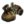

- 這篇文章討論的是產品及其生產和在進入貿易網絡或產生產品收入前的價值，關於貿易網絡和收入，參見貿易。
每個省都生產一種貿易商品（英文：Trade goods）；生產的商品是該省貿易價值的最大決定因素。反過來，貿易價值決定了該省的生產收入，並流入貿易網絡。
商品產出
一個省份生產的貨物計算如下：
[math]\displaystyle{ \text{商品产出} = \left(\sum\text{基础商品产出价值}\right)\,\cdot\,\left(\text{100%}\, +\, \sum\text{本地商品产出修正}\, +\, \sum\text{国家商品产出修正}\right) }[/math]
很多事件、決議和任務都影響貨物的生產，再加上下表中提到的本地和國家貨物生產價值和修正。
基礎商品產出
| 基礎商品產出 | 數值 |
|---|---|
| +0.2 每點生產發展度 | |
| 工廠 （除熔爐外） | +1 |
| 一個區域的貿易公司投資：中介辦公室 | +0.15 |
| 一個區域的貿易公司投資：中介交易所 | +0.30 |
| +0.05 每1000名土著。可受其它土著同化加成影響。 | |
| +1 每名勝等級（需要 |
本地商品產出修正
| 數值 | |
|---|---|
| +25% | |
| 該國是該商品的生產領導者 | +10% |
| 具體數值由貿易公司省份的貿易力量占比和貿易公司國家接納的最先進的思潮決定 | |
這項修正不會在商業共和國自己的省份生效，但是商業共和國能從其他商業共和國的貿易競爭力中獲得這項修正。
因此非領袖成員會從領袖控制的貿易競爭力占比獲得兩次加成0.5%+0.5%，而領袖只會獲得第一項+0.5%的普通加成。 | |
| 土著建築 混植田 | +50% |
| +5/+10/+20%（需要 | |
| 被占領 | −50% |
| 被圍城 | −25% |
| −1% 每1點荒廢度 | |
| −10% 每點負宗教容忍 |
國家商品產出修正
|  國家商品產出修正 | 數值 |
|---|---|
| 黃金時代 | +10% |
| +10% | |
| +10% | |
| 每個熔爐建築 | +5% |
| 經濟霸權 | +25% |
| +10% | |
| +10% | |
| +5% | |
| +10% | |
| +10% | |
| 祆教信仰國家激活了「豪麻」儀式（需要 |
+10% |
| +10% | |
| +10% | |
| 時代能力「波蘭王冠」 （ |
+33% |
| +5% | |
| 荷蘭圩田偉大工程可用 | +5% / +5% / +10% |
| −2% 每點 | |
| −25% | |
| −1% 低於50每點 ( 0 天命時 -50% ) |
理念和政策給予的國家商品產出修正
許多國家理念和政策可以提供商品產出修正。
貿易價值與收入
一個省份的  貿易價值是商品的價格乘以在該省份的貨物生產量：
貿易價值是商品的價格乘以在該省份的貨物生產量：
貿易價值然後流入一個省份的生產值（以  杜卡特）和一個節點的總貿易價值的計算中。請注意，列在省份窗口的貿易價值的所有數值被顯示為年度值。而在省份屏幕上部的生產和稅收值計算（其決定了每個省份直接貢獻給國庫的
杜卡特）和一個節點的總貿易價值的計算中。請注意，列在省份窗口的貿易價值的所有數值被顯示為年度值。而在省份屏幕上部的生產和稅收值計算（其決定了每個省份直接貢獻給國庫的  杜卡特）被顯示為月度值。
杜卡特）被顯示為月度值。
 黃金被視為一種特殊情況，它不產生貿易價值（參見下文完整討論）。然而它確實對一個省份的生產值有貢獻。
黃金被視為一種特殊情況，它不產生貿易價值（參見下文完整討論）。然而它確實對一個省份的生產值有貢獻。
貿易
- 主條目：貿易
一個省份產生的貿易價值流入該省份的貿易節點。最終，它將被收集並轉化為貿易收入。
生產
- 主條目：生產
本地貿易價值也為該省份的擁有者直接地產生生產收入；這個收入受到  生產效率修正。
生產效率修正。
每個省份生產一種商品。
商品相關機制
種類
遊戲中存在若干種類的商品。它們有各自不同的基礎價格，還可以帶來各種不同的獎勵（詳見本頁面「獎勵」章節）；產出不同商品的省份可修建的工場種類也不同。
遊戲中存在的全部商品種類見下表：
價格
- 主條目：價格變動事件
每種商品有一個全球普遍的基礎價格[1]。在遊戲中，商品的價格受到一系列特殊的價格變動事件影響而產生改變。這些事件大多具有特定的觸發條件；雖然這些事件的大部分並不指定特定的年份，在大多數遊戲中它們通常發生於特定的時間段。在遊戲中可以通過在其上懸停，查看當前正在影響著某種商品的價格修正。
在下列表格總結了基礎價格和不同的價格修正。 注意：
- 價格修正事件旁邊標註的年份僅供參考。大部分價格變動事件並不發生於指定的年份，而是依賴其它判斷條件，因此在遊玩過程中，事件更可能出現在相近的任何事件。部分事件的判斷條件很難與事件具體建立聯繫，因此表格中未列出供參考的年份。
- 部分商品價格修正是暫時的，在期限結束後對應商品會恢復到原價格。
- 遊戲中商品價格僅顯示小數點後兩位。
 黃金的相關機制不同於其它商品，在下文的專門段落對其進行了解釋。
黃金的相關機制不同於其它商品，在下文的專門段落對其進行了解釋。
| 商品 | 基礎價格 |
價格修正 | 修正後價格 |
相關價格變動事件 |
觸發條件 | 平均變動時間 | |
|---|---|---|---|---|---|---|---|
 |
布料 | 3 | +20% | 3.6 | 新布料 | 1544~ | |
| +15% | 4.05 | 統一管理 | 1674~ | ||||
| 魚類 | 2.5 | −10% | 2.25 | 大淺灘漁場 | 紐芬蘭任意省份被舊大陸國家完全殖民 | 1505~ | |
| −10% | 2 | 根深蒂固的新教 | 存在 5 個 |
1520~ | |||
| −25%（ |
1.375 |
小冰期中最冷的時期 | 固定年份 | 1650 | |||
| 毛皮 | 2 | +35% | 2.7 | 氈帽 | 北美洲有任意殖民省份產出毛皮 | 1535~ | |
| +40% | 3.5 | 歐洲海狸的消亡 | 固定年份 | 1570 | |||
| +25%（ |
4 |
小冰期中最冷的時期 | 固定年份 | 1650 | |||
| 穀物 | 2.5 | −20% | 2 | 哥倫布交換 |
|
1500+ | |
| −75%（ |
0.125 |
埃納普蒂納火山爆發 | 固定年份 | 1600 | |||
| −25%（ |
1.375 |
小冰期中最冷的時期 | 固定年份 | 1650 | |||
| 牲畜 | 2 | +25% | 2.5 | 哥倫布交換 |
|
1500+ | |
| −25%（ |
2 |
小冰期中最冷的時期 | 固定年份 | 1650 | |||
| +10% | 2.7 | 常設海軍 | 1687~ | ||||
| +35% | 3.4 | 選育配種 |
|
1700+ | |||
| 船具 | 2 | +50% | 3 | 常設海軍 | 1687~ | ||
| 鹽 | 3 | +10% | 3.3 | 大淺灘漁場 | 紐芬蘭任意省份被舊大陸國家完全殖民 | 1505~ | |
| +25%（ |
4.05 |
小冰期中最冷的時期 | 固定年份 | 1650 | |||
| 酒類 | 2.5 | −75%（ |
0.625 |
埃納普蒂納火山爆發 | 固定年份 | 1600 | |
| −25%（ |
1.875 |
小冰期中最冷的時期 | 固定年份 | 1650 | |||
| +25% | 3.125 | 軟木瓶塞 | 1661~ | ||||
| 羊毛 | 2.5 | -20% | 2 | 新布料 | 1544~ | ||
| +10% | 2.25 | 統一管理 | 1674~ | ||||
| +35% | 3.125 | 選育配種 |
|
1700+ | |||
| -10% | (-0.25) | 棉花進口 | 詳見對應事件 | 不定： 該事件的觸發條件導致其發生時間不易估計，甚至有可能不在遊戲中發生；此外，事件中還存在不會導致價格發生變動的選項 | |||
| 銅礦 | 3 | +50% | 4.5 | 青銅炮 | 1492~ | ||
| -35% | 3.45 | 鑄鐵技術進步 | 1635~ | ||||
| +150%（ |
(+4.5) |
[8.GetName]銅礦 | 完成瑞典任務「壟斷波羅的海」 | 不定： 該事件的觸發條件導致其發生時間不易估計，甚至有可能不在遊戲中發生；可在事件中選擇價格變動幅度 | |||
| -50%（ |
(-1.5) |
||||||
| +20%（ |
(+0.6) |
||||||
| 鐵礦 | 3 | +50% | 4.5 | 鑄鐵技術進步 | 1635~ | ||
| +25%（ |
(+0.75) |
[8.GetName]銅礦 | 完成瑞典任務「壟斷波羅的海」 | 不定： 該事件的觸發條件導致其發生時間不易估計，甚至有可能不在遊戲中發生；可在事件中選擇價格變動幅度 | |||
| -15%（ |
(-0.45) |
||||||
| +10%（ |
(+0.3) |
||||||
| 象牙 | 4 | +25% | 5 | 東南亞象群減少 | 固定時間 | 1750 | |
| 奴隸 | 2 | +50% | 3 | 三角貿易 | 詳見對應事件 | 1500+ | |
| -40% | 2.2 | 廢奴主義 | 1710+ | ||||
| 瓷器 | 3 | +50% | 4.5 | 歐洲的中國商人 | 詳見對應事件 | 不定： 該事件的觸發條件導致其發生時間不易估計 | |
| -50% | 3 | 邁森瓷 |
|
1700~ | |||
| 香料 | 3 | +50% | 4.5 | 香料貿易 | 詳見對應事件 | 不定： 該事件的觸發條件導致其發生時間不易估計 | |
| -40% | 3.3 | 香料貿易的衰退 | 詳見對應事件 | 不定： 該事件的觸發條件導致其發生時間不易估計 | |||
| 茶葉 | 2 | +25% | 2.5 | 日本茶文化 | 1505~ | ||
| +25% | 3 | 關於茶與糖 | 詳見對應事件 | 不定： 該事件的觸發條件導致其發生時間不易估計 | |||
| 可可 | 4 | +35% | 5.4 | 熱巧克力 | 詳見對應事件 | 1609~ | |
| 咖啡 | 3 | -40% | 1.8 | 咖啡植株的傳播 | 詳見對應事件 | 不定： 該事件的觸發條件導致其發生時間不易估計 | |
| +50% | 3.3 | 咖啡熱潮 | 詳見對應事件 | 1661~ | |||
| 棉花 | 3 | +45% | 4.35 | 白棉布與其他棉質布料 | 1687~ | ||
| +20% | (+0.6) | 棉花進口 | 詳見對應事件 | 不定： 該事件的觸發條件導致其發生時間不易估計，甚至有可能不在遊戲中發生；此外，事件中還存在不會導致價格發生變動的選項 | |||
| 糖類 | 3 | +25% | 3.75 | 關於茶與糖 | 詳見對應事件 | 不定： 該事件的觸發條件導致其發生時間不易估計 | |
| +50% | 5.25 | 改變消費模式 | 1661~ | ||||
| 菸草 | 3 | +50% | 4.5 | 菸草越來越受歡迎 | 1609~ | ||
| 染料 | 4 | +25% | 5 | 統一管理 | 1674~ | ||
| -25% | (-1) | 孟加拉染料作物種植園 | 詳見對應事件 | 不定： 該事件的觸發條件導致其發生時間不易估計，甚至有可能不在遊戲中發生；此外，事件中還存在不會導致價格發生變動的選項 | |||
| 絲綢 | 4 | +50% | 5 | 絲綢織物的普及 | 1635~ | ||
 |
熱帶木材 | 2 | +50% | 3 | 木板膠合技術的發展 | 1557~ | |
 |
薰香 | 2.5 | +10% | 2.75 | 日本茶文化 | 1505~ | |
| -25% | 2.125 | 新教和改革宗教會拒絕使用薰香 | 詳見對應事件 | 1530~ | |||
| +35% | 3 | 香水行業的發展 | 已接納全球貿易 | 1600+ | |||
 |
玻璃 | 3 | +25% | 3.75 | 波希米亞水晶 | 詳見對應事件 | 不定 |
| +25% | 4.5 | 鏡片製造的進步 | 1635~ | ||||
| -65% | 2.55 | 燧石玻璃和鉛水晶 | 已接納工場生產 | 1650+ | |||
| +15% | 3 | 軟木瓶塞 | 1661~ | ||||
| +15% | 3.45 | 常設海軍 | 1687~ | ||||
| 紙張 | 3.5 | +25% | 4.375 | 管理一個帝國 | 1497~ | ||
| +25% | 5.25 | 國際書市 | 已接納印刷機應用 | 1550+ | |||
| -50% | 3.5 | 打漿機 | 已接納工場生產 | 1650+ | |||
| +35% | 4.725 | 借閱圖書館和圖書俱樂部 | 已接納啟蒙主義 | 1700+ | |||
| 寶石 | 4 | +25% | 5 | 刻面 | 已接納文藝復興 | 1450+ | |
| -50% | 3 | 新大陸的鑽石 | 詳見對應事件 | 不定： 該事件的觸發條件導致其發生時間不易估計 | |||
| 煤炭 | 10 | -30% | 7 | 煤礦開採效率的改進 | 詳見對應事件 | 不定： 該事件的觸發條件導致其發生時間不易估計，甚至有可能不在遊戲中發生 | |
| 丁香 | 8 | - | 8 | 目前沒有關於丁香的價格變動事件 | - | - |
獎勵
每一種商品可以提供三類修正：產出省份獎勵（單個省份獎勵）、貿易獎勵、主要生產者獎勵。
- 產出省份獎勵 - 每個省份都會基於其所生產的商品，獲得一個僅作用於該省份的獎勵修正。（需要
 人權）
人權） - 貿易獎勵 - 一個國家控制某種商品至少 20% 的全球貿易額時，將會給予該國一個名為「（商品名）貿易」的獎勵修正。每種商品的當前市場份額可在統計報表找到。一個國家對於某種商品的市場控制份額的計算方法如下：該國在每一個貿易節點的貿易力量份額乘以該節點中該種商品的本地生產量。
- 當一個國家的市場份額達到 20% 時，即可獲得該種商品的貿易獎勵；而一個國家在其市場份額跌落 20% 以下時不會立即失去該獎勵。在沒有其它市場領導者出現的情況下，該國維持當前獎勵只要它維持超過 15% 的市場份額。
- 主要生產者獎勵 - 生產大部分某種特定商品將使一個國家成為該種商品的主要生產者，並會提供一個獎勵給這個種類的貨物的生產[2]：
| +10% | 本地商品產出 |
事件
- 主條目：商品事件
各種各樣的商品觸發某些事件——當玩家的國家擁有至少一個省份生產這種商品時。
特殊商品
 金礦
金礦
黃金是一種特殊的商品，其有利弊兩面：它會很大程度上直接促進經濟，但是每個月也會增加通貨膨脹。如果一個國家嚴重依賴金礦產出，可能通貨膨脹帶來的負面影響會抵消取得的收入增長。黃金不產生任何  貿易價值；而是以每年 40
貿易價值；而是以每年 40  每單位商品產出的比率直接地轉換成金幣——除了原始國家外。原始國家轉換黃金到現金只能以 1:4 的比率，少了 10 倍。來自黃金的收入不受
每單位商品產出的比率直接地轉換成金幣——除了原始國家外。原始國家轉換黃金到現金只能以 1:4 的比率，少了 10 倍。來自黃金的收入不受  生產效率修正加成，而且沒有工場對應黃金。
生產效率修正加成，而且沒有工場對應黃金。
一個國家每年遭受的通貨膨脹，等於來自黃金收入的比例的 0.5 倍。實際來說，如果不通過其他方式消除通貨膨脹的話，來自黃金收入的每 5.33% 份額將需要每年 1  行政點數去消除通脹。在有
行政點數去消除通脹。在有  年度通貨膨脹降低修正的情況下，所需要的年度通貨膨脹降低量顯示在下表。請注意，年度通貨膨脹降低等於或低於 –0.40 是不可能的，因為這個水平只能通過各種各樣的事件、決議、觸發修正和任務獎勵，再加上一位鑄幣專家顧問臨時地實現；實際上，不太可能有足夠的來自黃金的收入來讓這成為一個問題。
年度通貨膨脹降低修正的情況下，所需要的年度通貨膨脹降低量顯示在下表。請注意，年度通貨膨脹降低等於或低於 –0.40 是不可能的，因為這個水平只能通過各種各樣的事件、決議、觸發修正和任務獎勵，再加上一位鑄幣專家顧問臨時地實現；實際上，不太可能有足夠的來自黃金的收入來讓這成為一個問題。
| 不增加年度通脹的來自黃金收入比例 | |
|---|---|
| –0.05 | ≤10% |
| –0.10 | ≤20% |
| –0.20 | ≤40% |
| –0.30 | ≤60% |
| –0.40 | ≤80% |
| –0.50 | ≤100% |
黃金收入受本地自治度影響，自治度越高，收入越低。
金礦枯竭
產出金礦的省份在  生產發展度超過 1 時，每年都有概率發生枯竭，會導致其生產發展度減半。生產發展度為 2 時，枯竭機率是年度 0.01%，生產發展度越高，枯竭的概率越大；每一次枯竭降低該省份的
生產發展度超過 1 時，每年都有概率發生枯竭，會導致其生產發展度減半。生產發展度為 2 時，枯竭機率是年度 0.01%，生產發展度越高，枯竭的概率越大；每一次枯竭降低該省份的  基礎生產一半（降低結束若為小數，則將生產發展度向下取整，例如9點生產發展度枯竭後變為4點）。玩家能看到當前的枯竭概率，通過懸停在省份面板上的生產發展度增長按鈕上面。
基礎生產一半（降低結束若為小數，則將生產發展度向下取整，例如9點生產發展度枯竭後變為4點）。玩家能看到當前的枯竭概率，通過懸停在省份面板上的生產發展度增長按鈕上面。
一個金礦每年枯竭的機率大概如下：
[math]\displaystyle{ 0.005 \cdot \text{基础生产}^2-0.005 }[/math]
| 基礎生產 | 年度枯竭概率 |
|---|---|
| 3 | 0.04% |
| 4 | 0.07% |
| 5 | 0.12% |
| 6 | 0.17% |
| 7 | 0.24% |
| 8 | 0.31% |
| 9 | 0.40% |
| 10 | 0.49% |
| 11 | 0.60% |
| 12 | 0.71% |
| 13 | 0.84% |
| 14 | 0.97% |
| 15 | 1.12% |
| 16 | 1.27% |
| 17 | 1.44% |
| 18 | 1.61% |
| 19 | 1.80% |
金礦枯竭及其產量計算
給定的產金省份有生產發展度 [math]\displaystyle{ p }[/math]，隨著時間推移它枯竭最多 [math]\displaystyle{ log_2(p) }[/math] （向下取整）次，因為 1 級金礦不會發生枯竭。
把金礦作為一個離散時間線性系統對待，可以估計一個給定的時間段內的產量。
一座金礦在一個有生產發展度 [math]\displaystyle{ p }[/math] 的省份，等價於一個 [math]\displaystyle{ log_2(p)+1 }[/math] （向下取整）階矩陣系統。
一年期的離散狀態矩陣是：
[math]\displaystyle{ \mathbf{A} = \begin{bmatrix} 1-d_{0} & 0 & \cdots & \cdots & 0 \\ d_{0} & 1-d_{1} & 0 & \cdots & \vdots \\ 0 & \vdots & \ddots & \cdots & \vdots \\ \vdots & \vdots & \vdots & 1-d_{n-1} & 0 \\ 0 & \cdots & 0 & d_{n-1} & 1 \end{bmatrix} }[/math]
其中 [math]\displaystyle{ d_{i} }[/math] 在第i枯竭之後的枯竭機率
給定的初始狀態為： [math]\displaystyle{ \mathbf X_0 = \left (\begin{matrix} 1 \\ 0 \\ \vdots \\ 0 \end{matrix} \right) }[/math]
在 [math]\displaystyle{ y }[/math] 年之後該系統的狀態將會是： [math]\displaystyle{ \mathbf{X_{y}} = \mathbf{A^{y}} \mathbf X_0 }[/math]
已知一個基礎生產 5 的金礦生產 40  杜卡特/年，估算的年產量是：
[math]\displaystyle{ \text {年 度 杜 卡 特 }_{y} = 8 \mathbf P \mathbf X_y }[/math]
杜卡特/年，估算的年產量是：
[math]\displaystyle{ \text {年 度 杜 卡 特 }_{y} = 8 \mathbf P \mathbf X_y }[/math]
其中： [math]\displaystyle{ \mathbf P = (p, floor(p/2) , \dots , 1) }[/math]
那麼累計產量在給定的年數 [math]\displaystyle{ Y }[/math] 是： [math]\displaystyle{ \text {杜卡特} = \sum\limits_{y=1}^Y \text {年度杜卡特}_{y} }[/math]
| 基礎生產發展度 | 5 | 10 | 15 | 20 |
|---|---|---|---|---|
| 每年最大非枯竭產量 | 40 | 80 | 120 | 160 |
| 每年枯竭的概率 | 0.12% | 0.49% | 1.12% | 1.99% |
| 生產黃金超過 100 年 | 3,863 | 7,148 | 9,359 | 11,109 |
| 生產黃金超過 200 年 | 7,469 | 12,967 | 15,685 | 18,002 |
| 生產黃金超過 300 年 | 10,846 | 17,879 | 20,656 | 23,430 |
| 生產黃金超過 400 年 | 14,019 | 22,152 | 24,888 | 28,035 |
殖民領的黃金收入
|
|
只適用於DLC黃金國激活時。 |
- 參見：經濟#珍寶船隊
殖民領附屬國不會從黃金獲得收入，其所擁有的黃金省份產出的金錢會定期通過珍寶船隊運輸到它們的宗主國，只要它們的宗主國的本埠貿易節點位於該殖民領的貿易本埠所在節點的下游。如果不是此種情況，該殖民領則會直接獲得黃金產出的收入，但會基於這部分收入向宗主國支付關稅。
珍寶船隊帶來的金錢可受到  珍寶船隊收入的修正：
珍寶船隊收入的修正：
在珍寶船隊所需途徑的貿易節點（連接該殖民領及殖民母國的任一貿易節點）進行 私掠可以掠奪珍寶船隊中的金錢。
 煤炭
煤炭
在  啟蒙主義思潮出現之後，一些省份會將所生產的商品改變為
啟蒙主義思潮出現之後，一些省份會將所生產的商品改變為  煤炭；潛在的煤炭生產省份是完全固定的，在商品地圖介面，尚未開始產出煤炭的省份被標記為淺藍色條紋。煤炭具有很高的基礎商品價格，此外，煤炭允許省份擁有者建造工廠建築
煤炭；潛在的煤炭生產省份是完全固定的，在商品地圖介面，尚未開始產出煤炭的省份被標記為淺藍色條紋。煤炭具有很高的基礎商品價格，此外，煤炭允許省份擁有者建造工廠建築  熔爐，每一座熔爐建築都給予該國家 +5%
熔爐，每一座熔爐建築都給予該國家 +5%  全局商品產出。
全局商品產出。
煤炭能出現在滿足下列條件的省份：
奴隸
當一個國家通過「通過廢奴法案」決議時，其擁有的全部生產  奴隸的省份被直接設置成生產
奴隸的省份被直接設置成生產  「未知」商品。這個也將移除任何可能存在的任何奴隸工場建築，以及省份修正「
「未知」商品。這個也將移除任何可能存在的任何奴隸工場建築，以及省份修正「
商品生成
所有未殖民省份產出的商品均設為  「
「 「未知」商品圖標時，可以查看所有可能產生的商品種類及其對應概率。
「未知」商品圖標時，可以查看所有可能產生的商品種類及其對應概率。
商品的生成概率是基於各種各樣的因素加權的。最常見的是地理的限制，基於地形、氣候和區域，但是一些商品的概率也被殖民國家的文化甚至宗教影響（比如  酒類的情況）。
酒類的情況）。 絲綢永遠不會產生在殖民地，而
絲綢永遠不會產生在殖民地，而  布料、
布料、 玻璃和
玻璃和  紙張雖然沒有直接排除，但是由於其高
紙張雖然沒有直接排除，但是由於其高  發展度等級需求，同樣幾乎不可能產生。普通/歷史設置下沒有18發展度以上的殖民地省份，所以不會產生布料；但探索黃金七城有可能導致省份的發展度提高，並達到足以產生布料等商品的需求。
發展度等級需求，同樣幾乎不可能產生。普通/歷史設置下沒有18發展度以上的殖民地省份，所以不會產生布料；但探索黃金七城有可能導致省份的發展度提高，並達到足以產生布料等商品的需求。
在一個省份得到給定的商品的機率是由下式預先給出：
[math]\displaystyle{ \text{P}_i=\frac{\text{基础权重}_i \cdot \sum \text{修正}_i}{\sum_1^n\left(\text{基础权重}_x\cdot\sum\text{修正}_x\right)} }[/math]
式中 [math]\displaystyle{ P_i }[/math] 是一種特定的可能商品的概率，n 是在該省份可能商品的數量，並且分母中的求和涵蓋全部該省份可能商品。
如果一個殖民地由於成長超過400定居者而已經開始生產一種商品，且該殖民地後來在成為城市之前被摧毀，則該省份的商品將會還原到  「未知」。一旦一個殖民地已經達到 1000 定居者並且成為一個城市，其商品就固定了，除非受到特定事件的影響。
「未知」。一旦一個殖民地已經達到 1000 定居者並且成為一個城市，其商品就固定了，除非受到特定事件的影響。
商品概率列表
這個表格顯示了每一種商品的基礎產生權重和各種修正概率。請注意，遊戲中的所有省份都會進行潛在權重計算，因為自定義設置可能造成任何省份未被殖民。如果省份產出的原商品是  奴隸，則該省份在擁有者通過決議廢除奴隸制後產生的新商品也由如下權重和概率決定。
奴隸，則該省份在擁有者通過決議廢除奴隸制後產生的新商品也由如下權重和概率決定。
參見
參考資料
- ↑ 商品基礎價格列在：/Europa Universalis IV/common/prices/00_prices.txt。
- ↑ 見於：/Europa Universalis IV/common/static_modifiers/00_static_modifiers.txt（靜態修正#主要生產者）。
- ↑ 見於：/Europa Universalis IV/common/defines.lua。
- ↑ 見於：/Europa Universalis IV/common/tradegoods/00_tradegoods.txt。